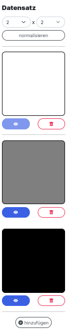
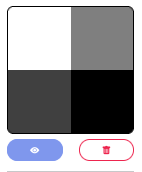

rechte Sidebar

Rechts neben dem Raster siehst du die rechte Sidebar, die im oberen Foto dargestellt ist. Hier siehst du die Eingabematrizen farblich dargestellt. Jedes farbliche Viereck steht für eine Eingabematrix. Je heller die Felder einer Eingabematrix gefärbt sind, desto kleiner sind die Werte in ihr. Im oberen Foto siehst du beispielsweise drei Eingabematrizen, wobei die erste nur 0en enthält, die zweite nur 1en und die dritte nur 2en. Dementsprechend sind die Eingabematrizen eingefärbt.
Im Regelfall hast du in einer Eingabematrix viele verschiedene Werte. Die untere Matrix hat enthält zum Beispiel die Zahlen -1, 1, 2, 3

Unter jeder Eingabematrix siehst du links einen Anzeige Button und rechts einen Löschen-Button. Klickst du auf den Anzeige Button wird diese Eingabematrix auf dem Raster angezeigt und du kannst im Ergebnis-Output ablesen wie gut diese spezifische Matrix/ dieses spezifische Beispiel gelernt wurde. Hier wird der Ergebnis-Output tatsächlich mit dem Anzeigen immer aktualisiert und du musst nicht nochmal extra auf "Vorhersagen" klicken.
Mit dem Löschen Button löschst du die Eingabematrix komplett. Das heißt sie wird nicht nur nicht mehr angezeigt, sondern ist komplett weg!
⚠️ Die aktuell angezeigte Matrix kannst du nicht löschen, weil immer mindestens eine Matrix existieren muss!
Ganz unten in der rechten Sidebar ist ein Button "hinzufügen" mit dem du neue Matrizen erstellen kannst. Klickst du darauf wird automatisch eine neue Eingabematrix in der gleichen Größe wie die bisherigen erstellt die nur 1en enthält. Willst du die Eingabewerte der Matrix ändern, musst du mit dem Anzeigen Button die Matrix auf dem Raster darstellen lassen und anschließend in die Zahlenfelder der Matrix klicken und neue Werte eintragen.
Die Farben zur Darstellung der Matrizen gucken den größten und kleinsten Wert aller Matrizen und färben diese dementsprechend ein. Erstellst du eine neue Matrix die einen enorm große Zahl enthält werden alle anderen Matrizen fast vollständig weiß sein.
Über den ganzen Matrizen in der rechten Sidebar sind zwei Zahlenfelder. Diese geben die Größe der Eingabetabellen an. Zuerst die Anzahl der Zeilen dann die Anzahl der Spalten. Erhöhst du die Anzahl der Zeilen oder Spalten werden entsprechend neue Zeilen oder Spalten unten bzw. rechts angehängt. Diese neuen Zeilen enthalten dann aber nur 0en und müssen dann wie zuvor beschrieben auf dem Raster mit neuen Werten gefüllt werden.
Verringert man die Anzahl der Zeilen oder Spalten wird die unterste bzw. am weitesten rechteste Zeile oder Spalte gelöscht.
Verringert man zuerst die Größe der Eingabematrix und erhöht diese anschließend wieder auf die Originalgröße sind die Werte die vorher in der Matrix standen weg und wurden nicht zwischengespeichert.
Mit dem normalisieren Button in der rechten Sidebar werden alle Werte aller Matrizen skaliert. Dadurch ist das Training mit den normalisierten Daten oft besser und die Darstellung der Eingabematrizen schöner.